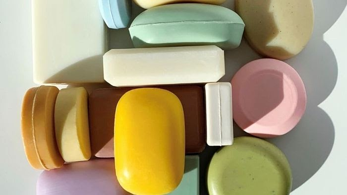

Introducción a la Destilación
La destilación implica calentar un líquido hasta que sus elementos más volátiles se convierten en vapor, y luego enfriar ese vapor para recuperar dichos elementos en forma líquida mediante la condensación. Este proceso puede llevar a una separación completamente esencial (obteniendo componentes casi puros) o a una separación parcial que aumenta la concentración de elementos específicos en la mezcla. En ambos casos, se explotan las diferencias en la volatilidad de los componentes de la mezcla.
Principios Básicos de la Destilación
La destilación es un proceso de separación utilizado para purificar líquidos mediante la diferencia en los puntos de ebullición de los componentes de una mezcla líquida. Es una técnica fundamental en la química y la industria, separa mezclas complejas y produce una variedad de productos, desde alcohol hasta productos petroquímicos. Su eficacia se basa en la explotación de las diferencias en los puntos de ebullición de los componentes en una mezcla líquida.
Destilación Simple
El proceso de la destilación consiste en calentar un líquido hasta que sus componentes más volátiles pasen a fase vapor y, posteriormente, enfriar el vapor hasta recuperar estos componentes en forma líquida mediante un proceso de condensación. La destilación se utiliza ampliamente en la obtención de bebidas alcohólicas, en el refinado del petróleo, en procesos de obtención de productos petroquímicos de todo tipo y en muchos otros campos de la industria.
Destilación Fraccionada
Podemos hablar de la destilación fraccionada como un proceso físico utilizado para separar mezclas (generalmente homogéneas) de líquidos mediante el calor, y con un amplio intercambio calorífico y másico entre vapores y líquidos. Se emplea cuando es necesario separar soluciones de sustancias con puntos de ebullición distintos pero cercanos. Una de las fuentes más importantes de materias primas es el petróleo, procesado en grandes cantidades en las refinerías.
Aplicaciones Industriales de la Destilación
La destilación se utiliza ampliamente en la obtención de bebidas alcohólicas, en el refinado del petróleo, en procesos de obtención de productos petroquímicos de todo tipo y en muchos otros campos de la industria. En el procesamiento de jabones, la destilación se emplea para purificar los componentes necesarios, mientras que en la destilación de perfumes, se aíslan los aceites esenciales aromáticos. Por ejemplo, en el proceso de destilación de perfumes, se hierben los ingredientes naturales para liberar sus aceites esenciales, que luego se condensan y recolectan como fragancias concentradas.

Innovaciones y Futuro de la Destilación
En los últimos años, la destilación, un proceso clave en la separación de componentes líquidos en la industria química y de petróleo, ha experimentado avances significativos en términos de eficiencia y sostenibilidad. Se han desarrollado técnicas como la destilación azeotrópica y la destilación reactiva para mejorar la eficiencia de separación y ahorro de energía. Además, la destilación por membrana y a baja presión se han utilizado para separar componentes de manera más eficiente. El uso de energía renovable y la implementación de tecnologías avanzadas, como la inteligencia artificial, están transformando la destilación hacia un proceso más sostenible y eficiente.